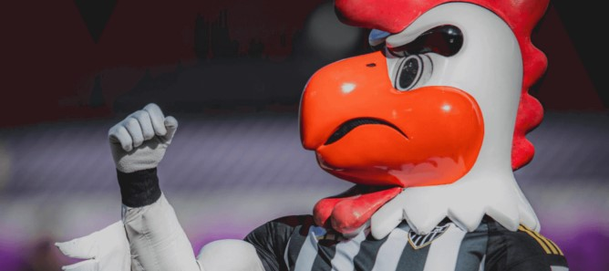

- Honramos o nome de Minas
- O Atlético é o maior vencedor do Campeonato Mineiro, pois possui 50 títulos dentre as 111 edições do torneio. Além disso, possui uma incrível sequência de 6 troféus do "Mineiro" (2020 - 2025)!
- Nós somos campeões do gelo
- Em 1950, o Atlético Mineiro realizou uma notável campanha em uma excursão pela Europa. No continente, o clima era frio e o time jogou uma série de amistosos em meio à neve e temperaturas negativas. Porém, mesmo assim, os jogadores tiveram um excelente desempenho de 6 vitórias, 2 empates e apenas 2 derrotas nas 10 partidas disputadas no exterior e, com isso, receberam o título simbólico de campeões do gelo!
- Nós somos Campeões dos Campeões
- Em 1937, o galo conquistou a primeira edição do Campeonato brasileiro, sendo assim o campeão dentre todos os campeões que disputam o torneio!
- Somos o orgulho do esporte nacional
- No dia 19/12/1968, o time do Atlético foi chamado para representar a Seleção Brasileira em uma partida contra a Iugoslávia e venceu por 3 a 2 em pleno Mineirão! Uma outra história é a do dia 03/09/1969, em que houve uma partida entre o galo e a Seleção Brasileira responsável pelo nosso tricampeonato mundial. E adivinha quem ganhou esse jogo?? Isso mesmo, foi o Galão da Massa!
Mascote
O mascote do CAM é o galo. Não é atoa que o apelido do time é esse!
A escolha do animal é atribuída ao chargista Fernando Pieruccetti, conhecido como O Mangabeira. Isso porque, em 1945, a pedido do jornal "A Folha de Minas", ele foi designado para a missão de desenhar o mascote do Atlético.
Segundo Fernando, “O Atlético sempre foi um time de raça. Mais parece um galo de briga, que nunca se entrega”!! Assim, nascia uma nova era...
Com o tempo, outras figuras também participaram dessa atribuição do Clube a um símbolo. Zé do Monte, por exemplo, foi um jogador dos anos 1950 que sempre entrava em campo com um galo de verdade! Além dele, os artistas Ivã Volpi e Ziraldo também deixaram suas marcas com icônicas representações do nosso mascote!
Em 2005, criou-se o Galo Doido, batizado assim pela própria torcida devido ao seu caráter heroico!

Easter eggs no Hino
O Hino do Galo é cheio de easter eggs! Confira alguns deles nessa lista: